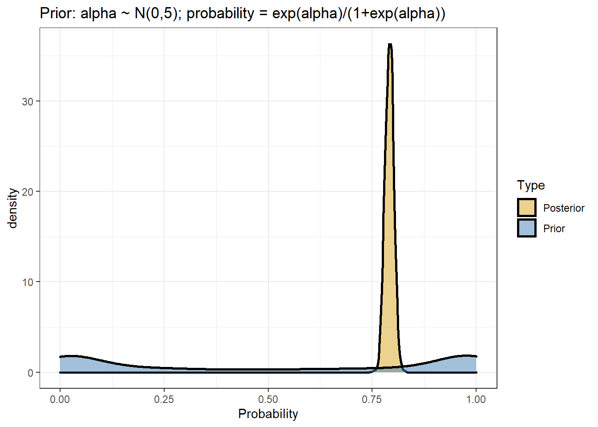
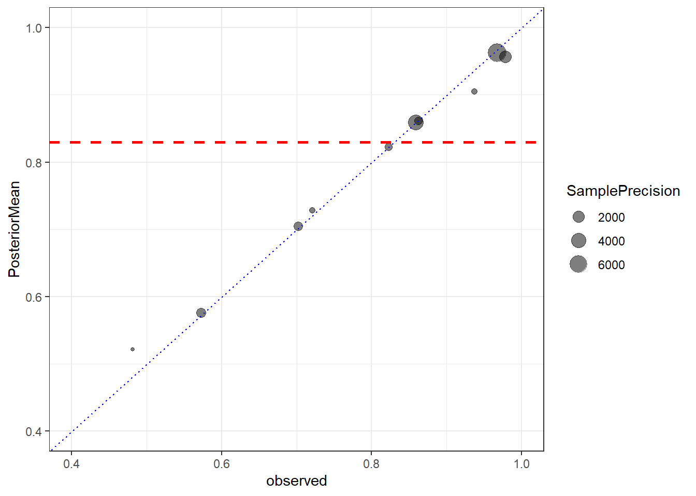
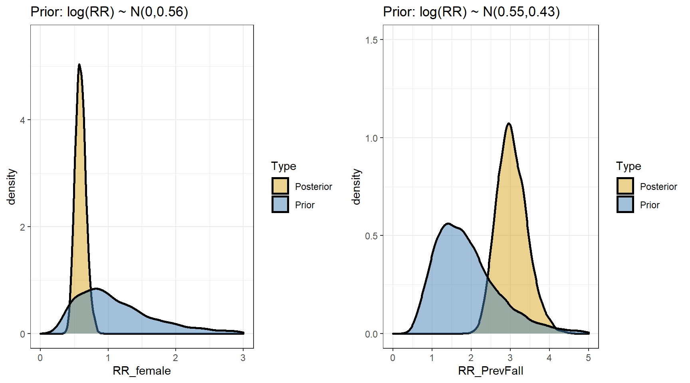
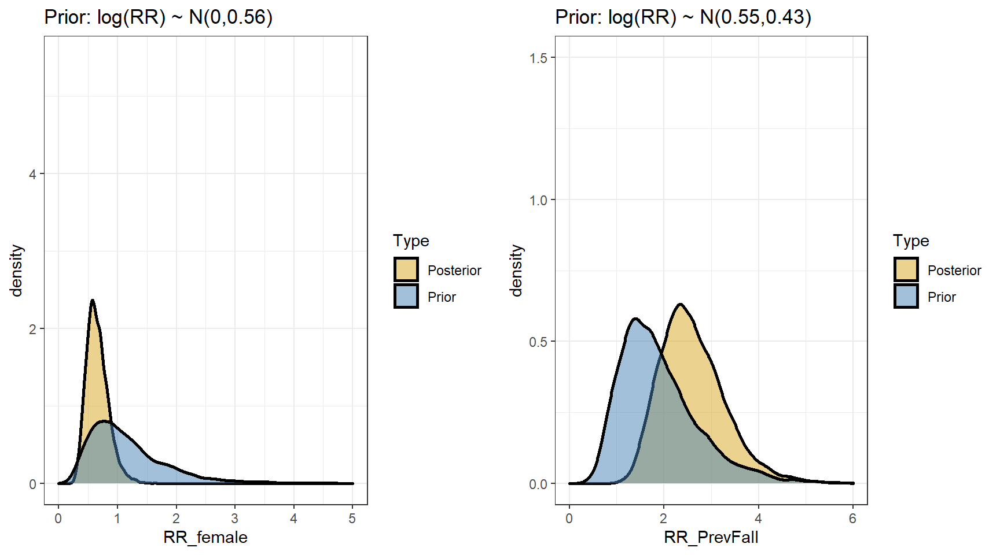
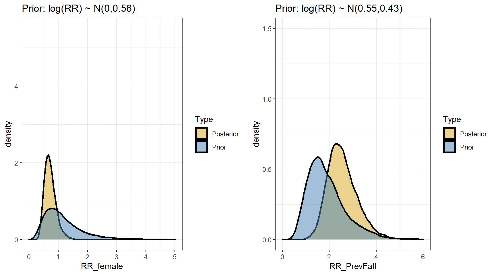

Session 7 Bayesian Regression II
- Learn how to fit and interpret Bayesian logistic regression
- Learn how to fit and interpret Bayesian poisson and negative binomial regression
- Reviewing hierarchical model: generalized mixed-effect models
7.1 Models for Binary Data
- For binary outcome Y, we are interested to model the probability of \(\pi_i = P(Y_i=1)\), \(i=1, \ldots, n\)
\[Y_i \mid \pi_i \sim Bern(\pi_i)\] \[ E(Y_i \mid \pi_i) = \pi_i\] \[logit( \pi_i) = \beta_0 + \beta_1 X_{i1}\]
logistic regression model featuring logit link that connects binary outcome to a conventional linear regression format, is part of the broader class of generalized linear models
Logit link convert probabilities to log odds.
\[\log(\frac{\pi_i}{1-\pi_i}) = \log(\frac{P(Y_i=1)}{1- P(Y_i=1)})\]
\[\log(\frac{\pi_i}{1-\pi_i}) = \beta_0 + \beta_1 X_{i1}\]

Logistic regression model
- Consider the logistic regression model \(Y\) with covariates \(X_i, \ldots, X_p\):
\[ \log(\frac{\pi_i}{1-\pi_i}) = \beta_0 + \beta_1 X_{i1} + \ldots + \beta_p X_{ip} \]
logistic regression coefficients is interpreted as log odds ratio!
Furthermore, we can recalculate probability using the inverse logit function (aka, expit function)
\[\pi_i = \frac{\exp(\beta_0 + \beta_1 X_{i1} + \ldots + \beta_1 X_{ip})}{1+\exp(\beta_0 + \beta_1 X_{i1} + \ldots + \beta_p X_{ip})}\]
- Assumptions of logistic regression models
- Independent observations. This assumption can be modified if working with clustered data.
- Linear relationship between continous covariates and log-odds We can check this assumption by examining marginal plots comparing the model predicted relationship between outcome (log-odds or logit-probability) and each continuous covariates.
- Multicollinearity Multicollinearity is the phenomenon when a number of the explanatory variables are strongly correlated.
- Correctly specified regression model This means that all relevant predictors for the response variable have been included in the model. This is often difficult to verify, but we can use posterior predictive distribution to check for regression fit. We can also use WAIC and LOO to compare different models.
- Comparing to linear regression model we no-longer require the residuals to be normally distributed and homoscedasticity.
Diagnostic Sensitivity Example
10 studies taken from (Bastos et al. 2020) on Diagnostic accuracy of serological tests for covid-19: systematic review and meta-analysis. BMJ. 2020
Each study reports observed positive chemiluminescent immunoassa (CLIA, \(r_i\)) and number having positive reference standard reverse transcriptase polymerase chain reaction (RT-PCR, \(n_i\))
Interest lies in summarizing this collection of values
Unpooled
- recall from last week, We can assume a binomial likelihood for each study (unpooled),
\[r_i \sim Bin(p_i, n_i) \]
we can assume that the 10 true sensitivities \(p_i\) are independent by fitting different prior to each one: \[p_i \sim Beta(1,1)\]
we will obtain 10 separate posteriors \(P(p_i \mid r_i, n_i)\)
- For example, we do not assume that \(p_1\) tells us anything about the value of \(p_2\)
Pooled
- Suppose we wanted to estimate the overall sensitivity of the CLIA test
- We do not want 10 separate estimates but a single estimate
- If we thought that the studies all had the same true sensitivity p0, we could fit a model like this:
- Assume a binomial likelihood for each study
\[r_i \sim Bin(p_i, n_i) \]
Assume that all studies have the same true sensitivity, \(p_0\): \[ p_i = p_0\]
Put a prior on \(p_0\): \(p_0 \sim Beta(1,1)\)
Different prior on \(p_0\)
The beta prior is useful for models with little additional structure
- e.g., estimating a single proportion; estimating a collection of proportions
It is difficult to use it to a model, where we want to include predictors of \(p_i\)
For most modelling approaches to binary data, we will use
- the logit transformation of \(p_i\)
- normal priors for parameters on this logit scale (e.g., normal prior for log-odds)
Logistic models
We still have the same likelihood \(r_i \sim Bin(p_i, n_i)\)
We define a new parameter using the logit transformation function:
\[logit(p_i) = log(\frac{p_i}{1-p_i}) = \alpha_i\] \[p_i = \frac{\exp(\alpha_i)}{1+\exp(\alpha_i)}\]
\(0<p_i<1 \Rightarrow -\infty < \alpha_i < \infty\)
Thus, it’s quite reasonable to use normal prior to characterize \(\alpha_i\)
1. Pooled model with non-informative prior
\[r_i \mid p_i, n_i \sim Bin(p_i, n_i)\] \[log(\frac{p_i}{1-p_i}) = \alpha\] \[\alpha \sim N(0, \sigma = 5)\]
fit1 <- brm(r | trials(n) ~ 1,
data = dat,
prior = prior(normal(0,5), class=Intercept),
family = binomial,
seed = 123)2. Unpooled model with non-informative prior
\[r_i \mid p_i, n_i \sim Bin(p_i, n_i)\] \[log(\frac{p_i}{1-p_i}) = \alpha + \beta_i \ \text{Study}_i\] \[\alpha \sim N(0, \sigma = 5)\] \[\beta_i \sim N(0, \sigma = 5)\]
fit2 <- brm(r | trials(n) ~ Study,
data = dat,
prior = c(prior(normal(0, 5), class = Intercept),
prior(normal(0, 5), class = b)),
family = binomial,
seed = 123)Generalized linear models
We can specify the type of model by two features - Family: type of outcome (binomial, normal, Poisson, gamma) - Link: relationship between mean parameter and predictor (identity, logic, log)
- we have models in the form
\[ Y_i \sim Dist(\mu_i, \tau)\] \[g(\mu_i) = \beta_0 + \beta_1 X_{i1} + \ldots + \beta_1 X_{ip}\]
\(g()\) is called the link function
Distributions family (exponential family) can be specified as Normal, Poisson, Binomial, Bernoulli, etc.
Usually, we use the logit for binary data and gets odds ratios (logistic model)
- If we use the log link, we can estimate relative risks
Sample from priors in brms
We can specify in brms to generate samples from our specified prior as part of the output
we can use these prior samples
- to compare with the posteriors to see how much the prior is updated by the data
- to check what information is in the prior
using the pooled model as an example
\[r_i \mid p_i, n_i \sim Bin(p_i, n_i)\] \[log(\frac{p_i}{1-p_i}) = \alpha\] \[\alpha \sim N(0, \sigma = 5)\]
fit1 <- brm(r | trials(n) ~ 1,
data = dat,
prior = prior(normal(0,5), class=Intercept),
family = binomial,
sample_prior = T, #asking brms to generate prior sample!
seed = 123)
# saveRDS(fit1, "data/chap8_binary_1")- checking posterior results
- computing posterior predicted probability of event (in this case the sensitivity of the CLIA test)
fit1 <- readRDS("data/chap8_binary_1")
#posterior draws of log-odds estimate - the intercept;
posterior <- posterior_samples(fit1)
#posterior predicted probability of event;
prob.pooled <- exp(posterior$b_Intercept)/(1+exp(posterior$b_Intercept))
mean(prob.pooled)## [1] 0.7910868quantile(prob.pooled, c(0.025, 0.975))## 2.5% 97.5%
## 0.7708342 0.8111113- what does the posterior output look like?
- comparing prior and posterior distribution visually
data.frame(Probability = c(inv_logit_scaled(posterior[,"b_Intercept"]),
inv_logit_scaled(posterior[,"prior_Intercept"])),
Type=rep(c("Posterior","Prior"),each=nrow(posterior))) %>%
ggplot(aes(x=Probability,fill=Type))+
geom_density(size=1,alpha=0.5)+
labs(title="Prior: alpha ~ N(0,5); probability = exp(alpha)/(1+exp(alpha))")+
theme_bw()+
scale_fill_manual(values=c("goldenrod","steelblue"))
7.1.1 Logistic regression with predictor
Adding one predictor, age, for each study in modelling CLIA sensitivity
We have the following Bayesian model
\[r_i \mid p_i, n_i \sim Bin(p_i, n_i)\] \[log(\frac{p_i}{1-p_i}) = \alpha + \beta \ age_i\] \[\alpha \sim N(0, \sigma = 5)\] \[\beta \sim N(0, \sigma = 5)\]
- \(\beta\) is interpreted as the changes on the log-OR associate 1 unit increase in age.
fit3 <- brm(r | trials(n) ~ age,
data = dat,
prior = c(prior(normal(0, 5), class = Intercept),
prior(normal(0, 5), class = b)),
family = binomial,
iter = 10000,
warmup = 8000,
cores = 4,
seed = 123)
# saveRDS(fit3, "data/chap8_binary_3")- checking posterior results
- computing posterior predicted probability of event (in this case the sensitivity of the CLIA test)
fit3 <- readRDS("data/chap8_binary_3")
#posterior draws of log-odds estimate - the intercept;
posterior <- posterior_samples(fit3)
# beta posterior summary
exp(mean(posterior$b_age))## [1] 1.045665exp(quantile(posterior$b_age, c(0.025, 0.975)))## 2.5% 97.5%
## 1.035435 1.056317#posterior predicted probability testing positive for each study;
pp<-posterior_predict(fit3)
mean.pp<-colMeans(pp)/dat$n
lci.pp<- apply(pp, 2, function(x) quantile(x, 0.025))/dat$n
uci.pp<- apply(pp, 2, function(x) quantile(x, 0.975))/dat$n
pp.table <- data.frame(Study = dat$Study,
r = dat$r,
n = dat$n,
Prob_obs = round(dat$r/dat$n,2),
Prob_post = round(mean.pp,2),
CI_post = paste0("(",round(lci.pp,2),",",round(uci.pp,2),")"))
pp.table %>%
datatable(
rownames = F,
class = "compact",
options = list(
dom = 't',
ordering = FALSE,
paging = FALSE,
searching = FALSE,
columnDefs = list(list(className = 'dt-center',
targets = 0:5))))7.1.2 Centring continous variable
- our model says that sensitivity is different across studies according to the average age
\[P(\text{test positive}) = \frac{\exp(\alpha + \beta \ age)}{1+ \exp(\alpha + \beta \ age)}\]
- We could obtain a prediction at the average of the ages
mean(dat$age)across the studies
\[P(\text{test positive}) = \frac{\exp(\alpha + \beta \times mean( age))}{1+ \exp(\alpha + \beta \times mean( age))}\]
- We could “centre” age at its average so that the intercept refers to the probability at the average age
\[r_i \mid p_i, n_i \sim Bin(p_i, n_i)\] \[log(\frac{p_i}{1-p_i}) = \alpha + \beta (\ age_i - mean(age))\] \[\alpha \sim N(0, \sigma = 5)\] \[\beta \sim N(0, \sigma = 5)\]
- Using a centred predictor also reduces correlation between intercept and slope. This can speed up MCMC convergence in some models (computationally more efficient).
#centring variable age;
dat$age.c <- dat$age - mean(dat$age)
fit3c <- brm(r | trials(n) ~ age.c,
data=dat,
prior = c(prior(normal(0, 5), class = Intercept),
prior(normal(0, 5), class = b)),
family = binomial,
iter = 5000,
warmup = 3000,
cores = 4,
seed = 123)
# saveRDS(fit3c, "data/chap8_binary_3c")- comparing posterior distribution between centred and uncentred models
fit3c <- readRDS("data/chap8_binary_3c")
#posterior draws of log-odds estimate - the intercept;
posteriorc <- posterior_samples(fit3c)
# beta posterior summary
exp(mean(posteriorc$b_age))## [1] 1.045625exp(quantile(posteriorc$b_age, c(0.025, 0.975)))## 2.5% 97.5%
## 1.035379 1.055847posterior predicted probability testing positive for each study comparing between the centred and uncentred models
we can see the results are almost identical and we achieved this with only 5000 iterations for the centred model.
we can investigate the correlation between two posterior regression parameters, \(\alpha\) (intercept) and \(\beta\) (log-OR for age).
The two parameters should be uncorrelated by model assumption! If you see visible correlation, you can consider thinning your MCMC or run more iterations.
p1 <- ggplot(posterior,
aes(b_Intercept, b_age))+
geom_point(alpha=.1)+
theme_bw()+
ggtitle("Uncentred age")
p2 <- ggplot(posteriorc, aes(b_Intercept, b_age.c))+
geom_point(alpha=0.25)+
theme_bw()+
ggtitle("Centred age")
ggarrange(p1,p2, nrow=1)- Model diagnostics
- Posterior predictive graphic check for model fit
p1<-pp_check(fit3c, ndraws = 50)
p2<-pp_check(fit3c, type = "stat_2d", stat = c("max", "min"))
ggarrange(p1,p2, nrow = 1)- Checking for model fitted marginal effect of age on probability of testing positive versus crude observed probability of testing positive
plot.dat <- fit3c$data
post_mu <- fitted(fit3c, scale = "response")
colnames(post_mu) <- c("mu", "mu_se", "lwr_ci", "upr_ci")
df_plot <- data.frame(plot.dat, post_mu)
df_plot <- df_plot %>%
mutate(prob_obs = r/n,
prob_est = mu/n,
prob_lwr_ci = lwr_ci/n,
prob_upr_ci = upr_ci/n)
x_sd <- sd(df_plot$age.c)
p <- ggplot(aes_string(x = "age.c", y = "prob_obs"), data = df_plot) +
# Add a layer of predictive intervals
geom_ribbon(aes(ymin = predict(loess(prob_lwr_ci~age.c, data = df_plot)),
ymax = predict(loess(prob_upr_ci ~age.c, data = df_plot))), fill = "skyblue", alpha = 0.3) +
geom_smooth(aes(y = prob_est, col = "Model"), se = FALSE,
method = "loess") +
geom_smooth(aes(y = prob_obs, col = "Data"), se = FALSE, linetype = "dashed",
method = "loess") +
theme(legend.position = "bottom") +
scale_color_manual(values = c("red", "blue"), name = "")
p + theme_bw()
7.1.3 hierarchical model revisit
Suppose that we do not believe that the sensitivity values are all the same
But we also believe that they are related, in the sense that they share a common underlying proportion but with deviations
Suppose also that our labelling of the studies is arbitrary (we would not worry if we had mixed the labels up)
Then the outcomes on the studies are exchangeable
We can treat them the same in the model, even though they are different studies
Exchangeable proportions
- We can assume the following model
\[logit(p_i) = \alpha_i = \alpha_0 + \epsilon_i\]
where \(\epsilon_i \sim N(0,\sigma^2)\)
this is equivalent as \(\alpha_i \sim N(\alpha_0,\sigma^2)\)
The logit for study \(i\) is near the average, but differs from it by some random amount \(\epsilon_i\), where \(\epsilon_i\) are restricted to be centred at zero with a normal distribution
The logit for study \(i\) is near the average, but varies with variance \(\sigma^2\)
\(\sigma^2\) can be estimated from the data and the model
It answers the question: how much do the logit proportions vary around their average?
Prior choice
- We will often use this sort of prior structure for \(\sigma\)
- half-t, \(\sigma \sim T_3(0, scale)\)
- half-normal, \(\sigma \sim N(0, scale)\)
- We pick scale to be some smallish number (1,2,3)
- It favours small values, but allows values that are relatively large
- small scale specification of the prior can gain precision
Hierarchical model
- This is hierarchical random intercept model!
- Data level, \(r_i \mid p_i, n_i \sim Bin(p_i(\alpha_i), n_i)\)
- Structure prior, Parameters directly governing the observed data are one level up, \(\alpha_i = \alpha_0 + \epsilon_i\)
- hyperparameter, \(\alpha_0 \sim N(0, 10)\) and \(\sigma ~ N(0, \sigma = 2)\)
Overall average and individual estimates
Imprecise sample estimates are “shrunk” towards the overall average
- This shrinkage reflects the assumption that the estimates share the same overall mean
When there is less data for an estimate, it “borrows” more information from the overall mean
Posterior means of each of the \(\alpha_i\) in a random effect model are “shrunk” towards their overall mean \(\alpha_0\) at the rate of \(\sigma\)
The overall mean \(\alpha_0\) contains information about the values of all the other \(\alpha_i\).
- The consequence: the posterior means of the \(\alpha_i\) are influenced by all the other \(\alpha_i\)
- Because of this correlation, Bayesian estimates are closer to the population mean than the observed sample
In the COVID testing example, this means that the posterior mean for study 1 depends to some extent on the data from all the other studies.
The Bayesian estimate can be seen as a compromise between
- A fixed effects estimate where all studies estimate share exactly the same common logit proportion \(\alpha_0\)
- A complete independence model, where the studies each estimate completely different logit proportion \(\alpha_i\), based entirely on the observed data in that study
The posterior precision is higher than the sample precision (in other words, the posterior variance is smaller than the sample variance)
- The together ” the studies (smaller \(\sigma\)), the more borrowing of strength
- The apart” the studies (larger \(\sigma\)), the less borrowing of strength
Run a random intercept model using brms
fit4 <- brm(r | trials(n) ~ (1| Study) ,
data=dat,
prior = c(prior(normal(0,10), class=Intercept),
prior(normal(0,2), class=sd)),
iter=10000,
warmup=8000,
cores = 4,
seed = 123,
family=binomial)
# saveRDS(fit4, "data/chap8_binary_4")- comparing posterior distribution between centred and uncentred models
fit4 <- readRDS("data/chap8_binary_4")
# posterior predicted sensitivity using fixed effect;
s4 <- posterior_samples(fit4)
predict(fit4)[,-2]/dat$n ## Estimate Q2.5 Q97.5
## [1,] 0.8244446 0.6962025 0.9240506
## [2,] 0.9620515 0.9212963 0.9907407
## [3,] 0.5756599 0.4927536 0.6557971
## [4,] 0.7287029 0.5737705 0.8688525
## [5,] 0.9561330 0.8510638 1.0000000
## [6,] 0.5220417 0.2592593 0.7777778
## [7,] 0.9052969 0.6875000 1.0000000
## [8,] 0.7047518 0.6146341 0.7902439
## [9,] 0.8588027 0.8151093 0.9005964
## [10,] 0.8609141 0.7375000 0.9500000# posterior predicted sensitivity including random effect
# How would I predict the sensitivity in a NEW study
# logit(p_i) = b_Intercept + e_i
# e_i ~ N(0, sd_Study__Intercept))
# logit(p_new) = b_Intercept + e_new
# e_new ~ N(0, sd_Study__Intercept)
newlogit <- s4$b_Intercept + rnorm(nrow(s4), 0, sd=s4$sd_Study__Intercept)
averageLogit <- s4$b_Intercept
hist(inv_logit_scaled(newlogit), nclass=50)
quantile(inv_logit_scaled(newlogit), c(0.5, 0.025, 0.975))## 50% 2.5% 97.5%
## 0.8341145 0.2199669 0.9901854data.frame(Sensitivity=c(inv_logit_scaled(newlogit), #mixed effect;
inv_logit_scaled(averageLogit)), #fixed effect;
Type=rep(c("New Study","Pooled Estimate"),each=nrow(s4))) %>%
ggplot(aes(x=Sensitivity, fill=Type))+geom_density(alpha=0.25)+theme_bw()
# Make plots of observed and fitted values
Prob <- mean(inv_logit_scaled(s4[,"b_Intercept"]))
CrI <- quantile(inv_logit_scaled(s4[,"b_Intercept"]), c(0.025, 0.975))
Prob2 <-inv_logit_scaled(mean(s4[,"b_Intercept"]))
data.frame(Size=dat$n, observed=dat$r/dat$n,
posteriorCount=predict(fit4)[,1])%>%
mutate(PosteriorMean=posteriorCount/Size) %>%
mutate(SamplePrecision=Size/(observed*(1-observed))) %>%
ggplot(aes(observed, PosteriorMean,size=SamplePrecision))+
geom_point(alpha=0.5)+
geom_abline(slope=1, intercept=0,lty=3,col="blue")+
ylim(c(0.4,1))+
xlim(c(0.4,1))+
theme(aspect.ratio = 1)+
geom_hline(yintercept=Prob,lty=2,col="red",size=1)+
theme_bw()
Seeds example
Concerns the proportion of seeds that germinated on each of 21 plates
Plates are arranged according to a 2 by 2 factorial layout by seed and type of root extract.
\(r_i\) and \(n_i\) are the number of those germinated and the total number of seeds on the \(i\)th plate, \(i=1, \ldots,21\).

Figure 7.1: Seed example data summary
There are two factors: seed and root extract
A fixed effects model would simply be (\(i\) index plate)
\[logit(p_i) = \beta_0 + \beta_1 SEED_i + \beta_2 ROOT_i\] \[r_i \sim Bin(n_i, p_i)\]
- The mean (probability) depends entirely on the `treatment’ received
- Variation in the \(r_i\) are only due to binomial distribution variability
The table of expected values for logits for each seed/root combination
| ROOT = 0 | ROOT=1 | |
|---|---|---|
| SEED=0 | \(\beta_0\) | \(\beta_0 + \beta_2\) |
| SEED=1 | \(\beta_0 + \beta_1\) | \(\beta_0 + \beta_1 + \beta_2\) |
Why might this not be sufficient?
- There could be additional unmeasured variables
- e.g., the plates are not identical, growing condition could be different, seeds might be from different parents, etc
One solution is to introduce a random intercept \(b_i\)
This is additional ‘noise’ that is added to each predicted logit(probability)
\[logit(p_i) = \beta_0 + \beta_1 SEED_i + \beta_2 ROOT_i + b_i\] \[r_i \sim Bin(n_i, p_i)\] \[b_i \sim N(0, \sigma_b)\]
The SEED and ROOT tell you what the expected value of the logit(p) is
The random effect accounts for deviations from this expected value
Some plates are higher than expected and some are lower
The table of expected values for logits for each seed/root combination (remain the same!)
We put a prior on the random effect \(b_i \sim N(0,\sigma_b)\)
We put a prior on \(\sigma_b\) (hyperparameter), since we do not know what amount of between-plate variation exists
We estimate the between-plate variation by finding a posterior distribution for \(\sigma_b\)
We have two levels of variation
- Within-plate (binomial variation with parameter \(p_i\))
- Between-plate (on \(logit(p_i)\) scale)
- Some of the latter is explained by the predictors
- The remaining is modelled by the random effect (normal variation) - random intercept
We have a hierarchical logistic regression model!
Verify fit of random effect model
Assess the degree of extra-binomial variation by looking at the standard deviation
Look at the posterior density plot for \(\sigma_b\)
- Is the density of \(\sigma_b\) away from zero?
- What is the posterior mean of \(\sigma_b\)
More formally to determine if the random effect model fits better than standard fixed effect model: use WAIC and/or loo.
Fit Seed example using brms
## Seed Root y Plate
## aegyptiaco 73:436 Bean :567 0:407 3 : 81
## aegyptiaco 75:395 Cucumber:264 1:424 10 : 79
## 7 : 74
## 8 : 72
## 2 : 62
## 4 : 51
## (Other):412## Seed Root y Plate
## 1 aegyptiaco 75 Bean 1 1
## 2 aegyptiaco 75 Bean 1 1
## 3 aegyptiaco 75 Bean 1 1
## 4 aegyptiaco 75 Bean 1 1
## 5 aegyptiaco 75 Bean 1 1
## 6 aegyptiaco 75 Bean 1 1fit5.1 <- brm(y ~ Root+Seed ,
data=d,
prior = c(prior(normal(0,10),class=Intercept),
prior(normal(0,2), class=b)),
family=bernoulli,
iter = 10000,
warmup = 8000,
chains = 4,
cores = 5,
seed = 123)
fit5.2 <- brm(y ~ Root+Seed+(1|Plate),
data=d,
prior = c(prior(normal(0,10),class=Intercept),
prior(normal(0,2), class=b),
prior(normal(0,2), class = sd)),
family=bernoulli,
iter = 20000,
warmup = 18000,
chains = 4,
cores = 5,
seed = 123)
# saveRDS(fit5.1, file="data/chap8_binary_5.1")
# saveRDS(fit5.2, file="data/chap8_binary_5.2")- Quick posterior summary
fit5.1 <- readRDS("data/chap8_binary_5.1")
fit5.2 <- readRDS("data/chap8_binary_5.2")
summary(fit5.1)## Family: bernoulli
## Links: mu = logit
## Formula: y ~ Root + Seed
## Data: d (Number of observations: 831)
## Draws: 4 chains, each with iter = 10000; warmup = 8000; thin = 1;
## total post-warmup draws = 8000
##
## Population-Level Effects:
## Estimate Est.Error l-95% CI u-95% CI Rhat Bulk_ESS Tail_ESS
## Intercept 0.64 0.11 0.43 0.85 1.00 8222 6308
## RootCucumber -0.27 0.16 -0.57 0.03 1.00 8292 6485
## Seedaegyptiaco75 -1.06 0.14 -1.35 -0.79 1.00 8578 6418
##
## Draws were sampled using sampling(NUTS). For each parameter, Bulk_ESS
## and Tail_ESS are effective sample size measures, and Rhat is the potential
## scale reduction factor on split chains (at convergence, Rhat = 1).summary(fit5.2)## Family: bernoulli
## Links: mu = logit
## Formula: y ~ Root + Seed + (1 | Plate)
## Data: d (Number of observations: 831)
## Draws: 4 chains, each with iter = 20000; warmup = 18000; thin = 1;
## total post-warmup draws = 8000
##
## Group-Level Effects:
## ~Plate (Number of levels: 21)
## Estimate Est.Error l-95% CI u-95% CI Rhat Bulk_ESS Tail_ESS
## sd(Intercept) 0.40 0.15 0.14 0.72 1.00 2294 3677
##
## Population-Level Effects:
## Estimate Est.Error l-95% CI u-95% CI Rhat Bulk_ESS Tail_ESS
## Intercept 0.63 0.20 0.23 1.05 1.00 4046 3816
## RootCucumber -0.37 0.26 -0.90 0.12 1.00 4519 4205
## Seedaegyptiaco75 -1.00 0.25 -1.48 -0.50 1.00 3910 3929
##
## Draws were sampled using sampling(NUTS). For each parameter, Bulk_ESS
## and Tail_ESS are effective sample size measures, and Rhat is the potential
## scale reduction factor on split chains (at convergence, Rhat = 1).exp(fixef(fit5.1)[,-2])## Estimate Q2.5 Q97.5
## Intercept 1.8888445 1.5309888 2.3506962
## RootCucumber 0.7624076 0.5644264 1.0286836
## Seedaegyptiaco75 0.3450610 0.2599323 0.4548134exp(fixef(fit5.2)[,-2])## Estimate Q2.5 Q97.5
## Intercept 1.8858444 1.2646870 2.8443232
## RootCucumber 0.6904545 0.4065323 1.1245548
## Seedaegyptiaco75 0.3661719 0.2266688 0.6066912- Visualize Parameter Effects
p1<-d %>%
modelr::data_grid(Seed, Root) %>%
add_fitted_draws(fit5.1) %>%
ggplot(aes(x = .value, y = interaction(Seed, Root))) +
stat_pointinterval(.width = c(.68, .95)) +
coord_flip() +
xlab("predicted probability") +
scale_x_continuous(breaks = seq(0, 1, 0.1),limits = c(0, 1))+
theme_bw()
p2<- d %>%
modelr::data_grid(Seed, Root, Plate) %>%
add_fitted_draws(fit5.2) %>%
ggplot(aes(x = .value, y = interaction(Seed, Root))) +
stat_pointinterval(.width = c(.68, .95)) +
coord_flip() +
xlab("predicted probability") +
scale_x_continuous(breaks = seq(0, 1, 0.1),limits = c(0, 1))+
theme_bw()
ggarrange(p1,p2, nrow = 2)- Compare models
#checking sd posterior density;
plot(fit5.2, variable = "sd_Plate__Intercept")
waic1 <- waic(fit5.1)
waic2 <- waic(fit5.2) #smaller wAIC better model!
compare_ic(waic1, waic2)7.2 Models for Count Data
- Example Count Data
- Number of deaths in cohort followed up for 5 years
- Number of deaths in subgroups of this cohort
- Number of episodes of cold or flu experienced by an individual in a year
- Number of hospitalizations a person experiences in a year
Poisson Distribution
If we count the number of events that occur over a fixed time period, this random variable Y can take on one of the whole numbers 0, 1, 2,…
Let \(\theta = E(Y)\), then the probability of observing \(y\) events (probability mass function) is
\[ P(Y = y \mid \theta) = \frac{\theta^y \exp(-\theta)}{y!}, y = 0,1,2, \ldots\]
There is only one parameter, the mean (or expected number of events)
This same parameter is also the variance
\[\theta = E(Y) = Var(Y)\]
- If we know the length of follow-up time is T, then we can write the expected number \(\theta\) as
\[\theta = \lambda \times T\]
where \(\lambda\) is the rate per unit of time.
- Then we can replace the mean by rate \(\times\) time in the Poisson probability mass function:
\[P(Y = y \mid \lambda, T) = \frac{(\lambda T)^y \exp(-\lambda T)}{y!}, y = 0,1,2, \ldots\]
When to use Poisson Distribution
- Time period of observation is known
- The event can be counted in whole numbers
- Occurrences are independent, so that one occurrence neither diminishes nor increases the chance of another
- The rate of occurrence for the time period in question is constant
For rare events (small \(p\), large \(n\)), \(Y \sim Bin(p,n)\) has approximately Poisson distribution.
Not necessary to count how many events have not occurred: e.g. we cannot count how many episodes of flu did not occur
7.2.1 Modelling Rates
- Usually, it is the rate that we are interested in e.g., consider a study looking at emergency room visits among CHF patients over three years
- Subject 1: enrolled at 24 months. so T=36 - 12 months
- Subject 2: enrolled at 12 months, so T=36 - 24 months
- Subject 1 will have a mean \(= 12 \times \lambda_1\)
- Subject 2 will have a mean \(= 24 \times \lambda_2\)
- We are interested in factors that affect their rates \(\lambda_1\) and \(\lambda_2\), not their enrolment or follow-up times.
1. Simple Poisson Model (one-sample)
- Suppose we have follow up time \(T_i\) and number of events \(Y_i\) for each subject
- Lets assume that the underlying rate of events is the same for everyone
- We are interested in this common underlying rate of events \(\lambda\)
- We prefer to model \(\log(\lambda)\), where
\[ \lambda > 0 \leftrightarrow - \infty < \log(\lambda) < \infty\]
and
\[Y_i \sim Poisson(\theta_i)\] \[\theta_i = \lambda \times T_i\] \[\log(\lambda) = \alpha\]
- \(\alpha\) is the log rate; \(\exp(\alpha)\) is the rate (on its original scale).
2. Two-sample Poisson Model (treatment vs control groups)
- Now if we assume the underlying rate of events is not the same for everyone and that it’s associated with some covariates (e.g., treatment)
- Interested in the effect of treatment (\(TRT_i=0 , 1\))
- Assume a rate \(\lambda_i\) that depends on the treatment received by subject \(i\), our model updated to
\[Y_i \sim Poisson(\theta_i)\] \[\theta_i = \lambda_i \times T_i\] \[\log(\lambda_i) = \alpha + \beta \times TRT_i\]
- Given the model above, we can compare rate between treated (t) and controls (c)
- Observe \(Y_c\) events in 110 person-years in the control group
\[Y_c \sim Poisson(\theta_c)\] \[\theta_c = \lambda_c \times 110 \] \[\log(\lambda_c) = \alpha\] - Observe \(Y_t\) events in 100 person-years in the treated group
\[Y_t \sim Poisson(\theta_t)\] \[\theta_t = \lambda_t \times 100 \] \[\log(\lambda_t) = \alpha + \beta\]
- Comparing the two models we have
\[\log(\lambda_t) - \log(\lambda_c) = \log(\frac{\lambda_t}{\lambda_c}) = \beta\]
- where \(\beta\) is interpreted as log rate ratio.
The concept of “offset”
- In this example, the Observe \(Y_c\) events in 110 person-years in the control group
\[\theta_c = \lambda_c \times 110 \] \[\log(\theta_c) = \log(\lambda_c) + \log(110) \]
- and more generally we have
\[Y_i \sim Poisson(\theta_i)\] \[\theta_i = \lambda \times T_i\] \[\log(\theta_i) = \log(\lambda_i) + \log(T_i)\] \[\log(\lambda_i) = \alpha + \beta \times TRT_i\]
The natural log of time (\(\log (T_i)\)) is is passed as the “offset” in brm (Bayesian model), glm and glmer models (frequentist model) for count data in R
We don’t estimate a parameter for the effect of log time - it is treated differently from other predictors (like age, for example)
It is the log(rate), not the log(mean) that is modelled linearly by the predictors
If the times are all equal to the same value TIME for participants, the offset can be omitted and the effects are for the rate per TIME
#example code for Poisson regression in brms;
brm(y ~ 1 + offset(log(Time)),
data = dat,
family = "poisson",
prior = c(prior(normal(0, 100), class = "Intercept")),
chains = 4,
iter = 10000,
warmup = 8000,
cores = 4)Poisson regression model
- Consider the poisson regression model on \(Y\) with covariates \(X_1, \ldots, X_p\) and offset \(T\) (time), where
\[ Y_i \mid \beta_0, \beta_1, \ldots, \beta_p \sim Pois(\lambda_i T_i)\]
\[ \log(\lambda_i) = \beta_0 + \beta_1 X_{i1} + \ldots + \beta_p X_{ip}\]
The regression coefficients can be interpreted as log relative risk.
Furthermore, we can recalculate expected number of event over a period of time \(T\) using the exponential function,
\[\lambda_i \times T = \exp(\beta_0 + \beta_1 X_{i1} + \ldots + \beta_p X_{ip}) \times T\]
- Assumptions of logistic regression models
- Independent observations. This assumption can be modified if working with clustered data.
- Linear relationship between continuous covariates and log-rate
- No over-dispersion For Poisson distributed variable, we have its mean equals to its variance. Thus, conditioning on predictors \(X\), the expected value of \(Y\) should be roughly equivalent to the variability in \(Y\). If this assumption is violated, we can consider fitting a negative binomial regression model by allowing the variance to be different (larger) from the mean. We can use waic and loo to determine if the negative binomial model is of better fit than the Poisson model.
- No zero-inflation When we observe majority of our study subjects with zero number of events over time, we call this data with an excess number of zeroes (zero-inflation). When we have excess zeroes in our count data, we can consider fitting a zero-inflated Poisson or a zero-inflated negative binomial regression model. We can use loo to determine if the zero-inflated models are of better fit than the Poisson model.
- e.g., the number of hospitalizations a health 20-25 years old person experiences in a year
- Multicollinearity Multicollinearity is the phenomenon when a number of the explanatory variables are strongly correlated.
- Correctly specified regression model We can use posterior predictive distribution to check for regression fit between different models and can also use WAIC and LOO to compare them.
Modelling Falls and Fall-Related Injuries in Older Dialysis Patients in brms
This example is taken from (Cook et al. 2006). We included two covariates from the original data for demonstration purpose.
This is a dataset looking at the number of episodes of falling over a year by dialysis patients
Not all subjects had a full year of follow-up; some dropped out
We can account for differing follow-up using a Poisson regression model with follow-up time as an “offset.”
To illustrate, we will use only two predictors: female sex, coded as 0/1, and history of previous falls, also coded as 0/1
- Displaying the first 10 observations:
dat <- read.table("data/fallsData.txt",header=T, sep="")
dat[1:10,] %>%
datatable(
rownames = T,
class = "compact",
options = list(
dom = 't',
ordering = FALSE,
paging = FALSE,
searching = FALSE,
columnDefs = list(list(className = 'dt-center',
targets = 0:3))))- First let’s examine the summary statistics
dat %>% tbl_summary(
statistic = list(all_continuous() ~ "{mean} ({sd})",
all_categorical() ~ "{n} / {N} ({p}%)"),
digits = all_continuous() ~ 2)| Characteristic | N = 1621 |
|---|---|
| falls | 1.54 (4.06) |
| fu | 0.90 (0.21) |
| FemaleSex | 70 / 162 (43%) |
| PrevFall | 54 / 162 (33%) |
| 1 Mean (SD); n / N (%) | |
# creating a subject ID;
dat$Subject <- factor(1:nrow(dat))
p1<-ggplot(dat, aes(x = falls)) +
geom_histogram(color = "white", breaks = seq(0, 40, by = 1)) +
ggtitle("Histogram of the number of falls over a year")+
ylab("frequency")+
theme_bw()
p2<-ggplot(dat, aes(x = fu)) +
geom_histogram(color = "white", bins = 20) +
ggtitle("Histogram of follow-up times")+
ylab("frequency")+
xlab("follow-up times")+
theme_bw()
ggarrange(p1,p2, nrow=1, ncol = 2)
- Now let choose priors using normal distribution. In this example, let’s consider informative priors!
- It is unlikely that females have a fall rate less than 1/3 times or more than 3 times the rate in males
\[P(\frac{1}{3} < RR_{female} < 3) = 95\%\] \[P(\log(\frac{1}{3}) < log(RR_{female}) < log(3)) = 95\%\] \[\text{Prior Mean}(\log RR_{female}) = \frac{\log(\frac{1}{3})+log(3)}{2} = 0 \text{ (midpoint)}\] \[\text{Prior SD}(\log RR_{female}) = \frac{log(3) - \log(\frac{1}{3})}{1.96 \times 2} = 0.56 \] 2. Previous falls are a known risk factor for current falls, so we use a prior that puts most weight on \(RR_{prevfall}>1\)
\[P(0.75 < RR_{prevfall} < 4) = 95\%\] \[P(\log(0.75) < log(RR_{prevfall}) < log(4)) = 95\%\] \[\text{Prior Mean}(\log RR_{prevfall}) = \frac{\log(0.75)+log(3)}{2} = 0.55 \text{ (midpoint)}\] \[\text{Prior SD}(\log RR_{prevfall}) = \frac{log(4) - \log(0.75)}{1.96 \times 2} = 0.43 \]
#sex;
s<-(log(3) - log(1/3))/(1.96*2)
m <- (log(3) + log(1/3))/2
p1<-data.frame(RR = seq(0,7,length=501)) %>%
mutate(p = dlnorm(RR, meanlog = m, sdlog = s)) %>%
mutate(Region = ifelse(RR<=1, "RR<1","RR>1"))%>%
ggplot(aes(RR, p))+
geom_line()+
geom_area(aes(fill=Region),alpha=0.7)+
theme_bw()+
scale_fill_manual(values= c("goldenrod","steelblue"))+
ggtitle(paste0("Prior RR for sex; P(RR<1)=",
round(100*plnorm(1,m,s)),"%"))+
ylab("p(RR)")+
scale_x_continuous(breaks=0:7)+
theme_bw()
#previous falls
s<-(log(4) - log(0.75))/3.92
m <- (log(4) + log(0.75))/2
p2<-data.frame(RR = seq(0,7,length=501)) %>%
mutate(p = dlnorm(RR, meanlog = m, sdlog = s)) %>%
mutate(Region = ifelse(RR<=1, "RR<1","RR>1"))%>%
ggplot(aes(RR, p))+
geom_line()+
geom_area(aes(fill=Region),alpha=0.7)+
theme_bw()+
scale_fill_manual(values= c("goldenrod","steelblue"))+
ggtitle(paste0("Prior RR for prevfall; P(RR<1)=",
round(100*plnorm(1,m,s)),"%"))+
ylab("p(RR)")+
scale_x_continuous(breaks=0:7)+
theme_bw()
ggarrange(p1,p2,nrow = 1, ncol=2)- Model 1. Simple Poisson Model
model1 <- brm(falls ~ FemaleSex + PrevFall + offset(log(fu)),
data = dat,
family = "poisson",
sample_prior=T,
prior = c(prior(normal(0, 100), class = "Intercept"),
prior(normal(0, 0.56), class = "b", coef=FemaleSex),
prior(normal(0.55, 0.43), class = "b", coef=PrevFall)),
chains = 4,
iter = 7500,
warmup = 5000,
cores = 4,
seed = 123,
silent = 2,
refresh = 0)
# saveRDS(model1, "data/chap8_poisson_1")- Posterior summary
model1 <- readRDS("data/chap8_poisson_1")
plot(model1)print(model1)## Family: poisson
## Links: mu = log
## Formula: falls ~ FemaleSex + PrevFall + offset(log(fu))
## Data: dat (Number of observations: 162)
## Draws: 4 chains, each with iter = 7500; warmup = 5000; thin = 1;
## total post-warmup draws = 10000
##
## Population-Level Effects:
## Estimate Est.Error l-95% CI u-95% CI Rhat Bulk_ESS Tail_ESS
## Intercept 0.21 0.11 -0.01 0.41 1.00 6546 6507
## FemaleSex -0.54 0.13 -0.81 -0.28 1.00 7598 7313
## PrevFall 1.10 0.13 0.86 1.35 1.00 6788 6892
##
## Draws were sampled using sampling(NUTS). For each parameter, Bulk_ESS
## and Tail_ESS are effective sample size measures, and Rhat is the potential
## scale reduction factor on split chains (at convergence, Rhat = 1).- Comparing prior and posterior
s1 <- posterior_samples(model1)
p1 <- data.frame(RR_female = c(exp(s1[,"b_FemaleSex"]),
exp(s1[,"prior_b_FemaleSex"])),
Type=rep(c("Posterior","Prior"),
each=nrow(s1))) %>%
ggplot(aes(x=RR_female,fill=Type))+
geom_density(size=1,alpha=0.5)+
xlim(c(0,3))+
ylim(c(0,5.5))+
labs(title="Prior: log(RR) ~ N(0,0.56)")+
theme_bw()+
scale_fill_manual(values=c("goldenrod","steelblue"))
p2 <-data.frame(RR_PrevFall = c(exp(s1[,"b_PrevFall"]),
exp(s1[,"prior_b_PrevFall"])),
Type=rep(c("Posterior","Prior"),each=nrow(s1))) %>%
ggplot(aes(x=RR_PrevFall,fill=Type))+
geom_density(size=1,alpha=0.5)+
xlim(c(0,5))+
ylim(c(0,1.5))+
labs(title="Prior: log(RR) ~ N(0.55,0.43)")+
theme_bw()+
scale_fill_manual(values=c("goldenrod","steelblue"))
ggarrange(p1,p2,nrow=1, ncol=2)
- We are interested in computing the posterior distributions for the rate ratios
beta <- data.matrix(s1[,c("b_Intercept","b_FemaleSex","b_PrevFall")])
my.summary <- function(x){
round(c(Mean=mean(x), Median=median(x), low=quantile(x,0.025), high=quantile(x, 0.975)),2)
}
t(apply(exp(beta),2,my.summary))## Mean Median low.2.5% high.97.5%
## b_Intercept 1.23 1.23 0.99 1.51
## b_FemaleSex 0.59 0.59 0.45 0.76
## b_PrevFall 3.04 3.01 2.37 3.86- suppose we are interested in predicting fall rates per year for the four types of subjects defined by sex and previous fall
# design matrix!
X<-cbind(MaleNoFall=c(1,0,0),
FemaleNoFall=c(1,1,0),
MalePrevFall=c(1,0,1),
FemalePrevFall=c(1,1,1))
row.names(X) <- c("Intercept","Female","PrevFall")
X## MaleNoFall FemaleNoFall MalePrevFall FemalePrevFall
## Intercept 1 1 1 1
## Female 0 1 0 1
## PrevFall 0 0 1 1Predictions <- exp(beta %*% X)
t(apply(Predictions,2,my.summary))## Mean Median low.2.5% high.97.5%
## MaleNoFall 1.23 1.23 0.99 1.51
## FemaleNoFall 0.72 0.72 0.55 0.93
## MalePrevFall 3.72 3.71 3.10 4.40
## FemalePrevFall 2.18 2.17 1.69 2.747.2.2 Expanding the Poisson Model
- The standard Poisson model says that the only random variation is due to the Poisson sampling
- i.e. all subjects with the same values of the predictors have the same rate
- The variance is equal to the mean and with more predictors, the same issue holds
\[\log(\lambda_i) = \beta_0 + \sum \beta_j x_{ij}\] \[ Y_i \sim Pois(\lambda_i T_i)\]
All variability in the number of falls is either explained by the \(x_{ij}\) or Poisson variability (there is no separate variance parameter)
This may be insufficient:
- “Extra-Poisson” variability is common - variability in excess of what the Poisson allows.
- This could result from omission of important and unmeasured predictors of the rate
- Clustering, by doctor, hospital, practice could induce additional variation
- There may be real unexplainable random variation: \(\lambda_i\) is only the average rate for subjects with characteristics defined by the \(x_{ij}\)
Model 2. Expanding with Random Effect
As with the hospital mortality, seeds and RP models, we can include a random intercept for each individual
This allows that, on average, subjects with the same characteristics have the same rate
It also allows that some individuals have rates higher or lower than this
This mean that variation in the actual counts can be larger than their mean
The true log-rate for subject \(i\) is somewhere near
\[\log(\lambda_i) \approx \beta_0 + \sum \beta_j x_{ij}\]
- Add normal random effects to the regression
\[\log(\lambda_i) \approx \beta_0 + \sum \beta_j x_{ij} + b_i\] \[ b_i \sim N(0, \sigma_b)\] \[ Y_i \sim Pois(\lambda_i T_i)\]
we can again examine the posterior distribution of \(\sigma_b\) to see if the random intercept added to the model is reasonable.
If \(\sigma_b\) is small, the Poisson distribution explains the between subject variability well enough
model2 <- brm(falls ~ FemaleSex + PrevFall + offset(log(fu)) + (1| Subject),
data = dat,
family = "poisson",
sample_prior=T,
prior = c(prior(normal(0, 100), class = "Intercept"),
prior(normal(0, 0.56), class = "b", coef=FemaleSex),
prior(normal(0.55, 0.43), class = "b", coef=PrevFall)),
chains = 4,
iter = 7500,
warmup = 5000,
cores = 4,
seed = 123,
silent = 2,
refresh = 0)
# saveRDS(model2, "data/chap8_poisson_2")- Posterior summary
model2 <- readRDS("data/chap8_poisson_2")
plot(model2)
print(model2)## Family: poisson
## Links: mu = log
## Formula: falls ~ FemaleSex + PrevFall + offset(log(fu)) + (1 | Subject)
## Data: dat (Number of observations: 162)
## Draws: 4 chains, each with iter = 7500; warmup = 5000; thin = 1;
## total post-warmup draws = 10000
##
## Group-Level Effects:
## ~Subject (Number of levels: 162)
## Estimate Est.Error l-95% CI u-95% CI Rhat Bulk_ESS Tail_ESS
## sd(Intercept) 1.47 0.17 1.18 1.83 1.00 3162 5040
##
## Population-Level Effects:
## Estimate Est.Error l-95% CI u-95% CI Rhat Bulk_ESS Tail_ESS
## Intercept -0.78 0.25 -1.31 -0.32 1.00 6717 7198
## FemaleSex -0.46 0.28 -1.02 0.08 1.00 6607 7669
## PrevFall 0.93 0.26 0.42 1.43 1.00 6671 7458
##
## Draws were sampled using sampling(NUTS). For each parameter, Bulk_ESS
## and Tail_ESS are effective sample size measures, and Rhat is the potential
## scale reduction factor on split chains (at convergence, Rhat = 1).- Comparing prior and posterior

- We are interested in computing the posterior distributions for the rate ratios
beta <- data.matrix(s2[,c("b_Intercept","b_FemaleSex","b_PrevFall")])
t(apply(exp(beta),2,my.summary))## Mean Median low.2.5% high.97.5%
## b_Intercept 0.47 0.46 0.27 0.73
## b_FemaleSex 0.66 0.63 0.36 1.09
## b_PrevFall 2.61 2.53 1.52 4.20- predicting the expected fall rates per year for the four types of subjects defined by sex and previous fall
# design matrix!
X<-cbind(MaleNoFall=c(1,0,0),
FemaleNoFall=c(1,1,0),
MalePrevFall=c(1,0,1),
FemalePrevFall=c(1,1,1))
row.names(X) <- c("Intercept","Female","PrevFall")
Predictions <- exp(beta %*% X)
t(apply(Predictions,2,my.summary))## Mean Median low.2.5% high.97.5%
## MaleNoFall 0.47 0.46 0.27 0.73
## FemaleNoFall 0.30 0.29 0.16 0.49
## MalePrevFall 1.20 1.16 0.66 1.94
## FemalePrevFall 0.76 0.74 0.39 1.29Model 3. Negative Binomial Model
A random variable Y is overdispersed if the observed variability in Y exceeds the variability expected by the assumed probability model of Y
Consider a negative regression model on \(Y\) with covariates \(X_1, \ldots, X_p\) and offset \(T\) (time), we have
\[ Y_i \mid \beta_0, \beta_1, \ldots, \beta_p, \mu_i, \gamma \sim NegBin(\mu_i, r)\]
\[ \log(\mu_i) = \beta_0 + \beta_1 X_{i1} + \ldots + \beta_p X_{ip}\]
The mean and variance are not equal! \[E(Y_i \mid \mu_i, \gamma) = \mu_i \text{ and } Var(Y_i \mid \mu_i, \gamma) = \mu_i + \frac{\mu_i^2}{\gamma}\]
Comparisons to the Poisson model
- For a large dispersion parameter \(\gamma\), \(E(Y)\approx Var(Y)\) and this model will approximate a Poisson model.
- For a small dispersion parameter \(\gamma\), \(E(Y) < Var(Y)\) and \(Y\) is overdispersed.
model3 <- brm(falls ~ FemaleSex + PrevFall + offset(log(fu)),
data = dat,
family = "negbinomial",
sample_prior=T,
prior = c(prior(normal(0, 100), class = "Intercept"),
prior(normal(0, 0.56), class = "b", coef=FemaleSex),
prior(normal(0.55, 0.43), class = "b", coef=PrevFall)),
chains = 4,
iter = 7500,
warmup = 5000,
cores = 4,
seed = 123,
silent = 2,
refresh = 0)
saveRDS(model3, "data/chap8_poisson_3")- Posterior summary
model3 <- readRDS("data/chap8_poisson_3")
plot(model3)
print(model3)## Family: negbinomial
## Links: mu = log; shape = identity
## Formula: falls ~ FemaleSex + PrevFall + offset(log(fu))
## Data: dat (Number of observations: 162)
## Draws: 4 chains, each with iter = 7500; warmup = 5000; thin = 1;
## total post-warmup draws = 10000
##
## Population-Level Effects:
## Estimate Est.Error l-95% CI u-95% CI Rhat Bulk_ESS Tail_ESS
## Intercept 0.23 0.21 -0.19 0.65 1.00 10442 7628
## FemaleSex -0.37 0.27 -0.91 0.18 1.00 10039 7907
## PrevFall 0.91 0.25 0.42 1.39 1.00 11198 8023
##
## Family Specific Parameters:
## Estimate Est.Error l-95% CI u-95% CI Rhat Bulk_ESS Tail_ESS
## shape 0.39 0.07 0.27 0.56 1.00 10233 7856
##
## Draws were sampled using sampling(NUTS). For each parameter, Bulk_ESS
## and Tail_ESS are effective sample size measures, and Rhat is the potential
## scale reduction factor on split chains (at convergence, Rhat = 1).- Comparing prior and posterior

- We are interested in computing the posterior distributions for the rate ratios
beta <- data.matrix(s3[,c("b_Intercept","b_FemaleSex","b_PrevFall")])
t(apply(exp(beta),2,my.summary))## Mean Median low.2.5% high.97.5%
## b_Intercept 1.29 1.26 0.83 1.91
## b_FemaleSex 0.72 0.69 0.40 1.19
## b_PrevFall 2.56 2.49 1.53 4.02- suppose we are interested in predicting fall rates per year for the four types of subjects defined by sex and previous fall
Predictions <- exp(beta %*% X)
t(apply(Predictions,2,my.summary))## Mean Median low.2.5% high.97.5%
## MaleNoFall 1.29 1.26 0.83 1.91
## FemaleNoFall 0.90 0.87 0.55 1.42
## MalePrevFall 3.21 3.11 2.03 4.91
## FemalePrevFall 2.25 2.15 1.27 3.81Model 4. Expanding with zero-inflation
- Often, excessive numbers of zero counts are a problem (e.g., healthy individuals have no events and less healthy individuals can have many events)
- The Poisson distribution with mean \(\theta\) has this probability of zero events:
\[P(Y=0 \mid \theta) = \frac{\theta^0 \exp(-\theta)}{0!} = \exp(-\theta)\]
e.g., if the mean is 5, \(P(Y=0) = 0.67\%\)
In a sample where a lot of people have high counts, so the mean is high, zeroes are unlikely
One solution is to fit a zero-inflated Poisson
It has two parts (“mixture model”)
- One regression fits a probability that \(\lambda_i = 0\) (explains some of the zeroes)
- A simultaneous regression fits the observed count (explains some of the zeroes)
The model says that some subjects have a true zero rate - one set of predictors is used for this
Among subjects with a non-zero rate, the observations are Poisson
To model this we need a new Bernoulli variable \(z\), \(z\) tells us which group (reg 1 for \(\lambda_i = 0\) or reg 2 for the observed counts) the observation is in: 0 or 1
- \(z=0 \rightarrow \theta = z \times \lambda \times T = 0\) (never have a fall, structural zeros)
- \(z=1 \rightarrow \theta = z \times \lambda \times T\) (fall with rate \(\lambda\))
The probability that \(z\) is 0 is governed by a separate logistic model for \(z\), which does not have to include all the same predictors for example previous fall in the fall example
\[Zero_i \sim dbern(p_i)\] \[logit(p_i) = \alpha_0 + \alpha_1 \times PrevFall_i\]
model4 <- brm(bf(falls ~ FemaleSex + PrevFall + offset(log(fu)),
zi ~ PrevFall), #being a non-faller
data = dat,
family = zero_inflated_poisson(link_zi="logit"),,
sample_prior=T,
prior = c(prior(normal(0, 100), class = "Intercept"),
prior(normal(0, 0.56), class = "b", coef=FemaleSex),
prior(normal(0.55, 0.43), class = "b", coef=PrevFall)),
chains = 4,
iter = 7500,
warmup = 5000,
cores = 4,
seed = 123,
silent = 2,
refresh = 0)
# saveRDS(model4, "data/chap8_poisson_4")- Posterior summary
model4 <- readRDS("data/chap8_poisson_4")
plot(model4)print(model4)## Family: zero_inflated_poisson
## Links: mu = log; zi = logit
## Formula: falls ~ FemaleSex + PrevFall + offset(log(fu))
## zi ~ PrevFall
## Data: dat (Number of observations: 162)
## Draws: 4 chains, each with iter = 7500; warmup = 5000; thin = 1;
## total post-warmup draws = 10000
##
## Population-Level Effects:
## Estimate Est.Error l-95% CI u-95% CI Rhat Bulk_ESS Tail_ESS
## Intercept 1.00 0.12 0.75 1.22 1.00 9383 7367
## zi_Intercept 0.33 0.23 -0.13 0.78 1.00 10781 7337
## FemaleSex -0.36 0.15 -0.66 -0.07 1.00 10093 7028
## PrevFall 0.68 0.14 0.41 0.96 1.00 9006 7111
## zi_PrevFall -0.95 0.39 -1.72 -0.19 1.00 11633 6932
##
## Draws were sampled using sampling(NUTS). For each parameter, Bulk_ESS
## and Tail_ESS are effective sample size measures, and Rhat is the potential
## scale reduction factor on split chains (at convergence, Rhat = 1).- Comparing prior and posterior
- Computing the posterior distributions for the rate ratios
beta4 <- data.matrix(s4[,c("b_Intercept","b_FemaleSex","b_PrevFall","b_zi_PrevFall")])
t(apply(exp(beta4),2,my.summary))## Mean Median low.2.5% high.97.5%
## b_Intercept 2.73 2.72 2.13 3.40
## b_FemaleSex 0.71 0.70 0.52 0.93
## b_PrevFall 2.00 1.98 1.51 2.61
## b_zi_PrevFall 0.42 0.39 0.18 0.83- Predicting fall rates per year for the four types of subjects defined by sex and previous fall
Z <- s4[,c("b_zi_Intercept","b_zi_PrevFall" )]
C <- s4[,c("b_Intercept","b_FemaleSex","b_PrevFall")]
# create a dataset with the 4 categories of patient and one year of follow-up
nd <- cbind(expand.grid(PrevFall=0:1,
FemaleSex=0:1),
fu=1,
Subject=999)
# probabilities of zero counts for the falls and no-falls groups
# irrespective of sex
Pr0. <- plogis(Z[,"b_zi_Intercept"])
Pr1. <- plogis(Z[,"b_zi_Intercept"] + Z[,"b_zi_PrevFall"])
# (ij) = (prevfall, sex)
C00 <- exp(C[,"b_Intercept"])
C10 <- exp(C[,"b_Intercept"] + C[,"b_PrevFall"])
C01 <- exp(C[,"b_Intercept"] + C[,"b_FemaleSex"])
C11 <- exp(C[,"b_Intercept"] + C[,"b_FemaleSex"] + C[,"b_PrevFall"])
# probability of a fall * mean, if male and a previous non-faller
M00 <- (1-Pr0.) * C00
# probability of a fall * mean, if male and a previous faller
M10 <- (1-Pr1.) * C10
# probability of a fall * mean, if female and a previous non-faller
M01 <- (1-Pr0.)*C01
# probability of a fall * mean, if female and a previous faller
M11 <- (1-Pr1.)*C11
# mean (expected) numbers of falls
round(rbind("No fall/male"=my.summary(M00),
"Fall/male"=my.summary(M10),
"No fall female"=my.summary(M01),
"Fall/female"=my.summary(M11)),2)## Mean Median low.2.5% high.97.5%
## No fall/male 1.14 1.13 0.82 1.52
## Fall/male 3.49 3.47 2.59 4.46
## No fall female 0.80 0.79 0.54 1.11
## Fall/female 2.45 2.42 1.72 3.29- Summarizing the observed rates by previous fall and sex from the data
group.by <- list(PrevFall=dat$PrevFall,
FemaleSex=dat$FemaleSex)
FU <- aggregate(x = dat$fu, group.by, sum)
names(FU)[names(FU)=="x"] <- "FU"
FALLS <- aggregate(dat$falls,group.by,sum)
names(FALLS)[names(FALLS)=="x"] <- "Falls"
N <- aggregate(dat$falls,group.by,length)
names(N)[names(N)=="x"] <- "N"
temp <- merge(FU,FALLS,
by=c("PrevFall","FemaleSex"))
falls.aggregate <- merge(temp,
N,
by=c("PrevFall","FemaleSex"))
falls.aggregate$Obs <- round(falls.aggregate$Falls/falls.aggregate$FU,2)
falls.aggregate %>%
datatable(
rownames = F,
class = "compact",
options = list(
dom = 't',
ordering = FALSE,
paging = FALSE,
searching = FALSE,
columnDefs = list(list(className = 'dt-center',
targets = 0:5))))- Combining results from all four models
- Posterior summary
| model | RR | mean | 2.5% | 97.5% |
|---|---|---|---|---|
| Poisson | female sex | 0.59 | 0.45 | 0.76 |
| prev fall | 3.01 | 2.37 | 3.86 | |
| Poisson/RE | female sex | 0.63 | 0.36 | 1.09 |
| prev fall | 2.53 | 1.52 | 4.20 | |
| NB | female sex | 0.72 | 0.40 | 1.19 |
| prevfall | 2.56 | 1.53 | 4.02 | |
| ZIP | RR:female sex | 0.71 | 0.52 | 0.93 |
| RR:prev fall | 2.00 | 1.51 | 2.61 | |
| OR(zero):prev fall | 0.42 | 0.18 | 0.83 |
- Posterior predictive summary
PredictedRates <- cbind(
Pois=predict(model1, newdata=nd)[,1],
"P/RE"=predict(model2, newdata=nd,
re_formula = ~1 | Subject, allow_new_levels=T)[,1],
"NB"=predict(model3, newdata=nd)[,1],
"ZIP"=predict(model4, newdata=nd)[,1])
PredictedRates <- cbind(nd[,1:2],round(PredictedRates,2))
PredictedRates <-merge(falls.aggregate[,c("N","Obs","PrevFall","FemaleSex")],
PredictedRates, by=c("PrevFall","FemaleSex"))
PredictedRates %>%
datatable(
rownames = F,
class = "compact",
options = list(
dom = 't',
ordering = FALSE,
paging = FALSE,
searching = FALSE,
columnDefs = list(list(className = 'dt-center',
targets = 0:7))))Summary
RR are of similar size for each of the models
CrI are wider for all models that allow for extra-Poisson variation
In the ZIP model, being previous fall decreases the odds of being a non-faller (having a zero count)(OR=0.42)
- among the fallers, the effect of a previous fall (RR=2.0) is smaller than for the other models
7.2.3 Checking and comparing models
Dose simple Poisson fit the count outcome?
Tukey Hanging Rootogram
- In this visualization the comparison is made easier by ‘hanging’ the observed results from the theoretical curve
- As in the rootogram, the vertical axis is scaled to the square-root of the frequencies so as to draw attention to discrepancies in the tails of the distribution
- installing the
vcdpackage in R and using the following command to generate the Tukey Hanging Rootogram - checking the excesses if it fits well there should be no bar hanging above or below line 0.
- In this example, we have a few bars (for small number of falls: 1-5) hanging above and a few bars (number of falls 11+) hanging below. A single Poisson (intercept only) does not fit well
- This also indicates over-dispersion. However, we do not see major issue with excessive zeros (the first bar is not hanging above or below).
library(vcd)
fit1 <- goodfit(dat$falls,"poisson")
plot(fit1,xlab="Number of Falls")- Comparing between the four models using loo
loo1 <- loo(model1)
loo2 <- loo(model2) #best model
loo3 <- loo(model3)
loo4 <- loo(model4)
loo_compare(loo1, loo2, loo3, loo4)## elpd_diff se_diff
## model2 0.0 0.0
## model3 -28.3 7.3
## model4 -127.5 53.6
## model1 -189.2 71.1- visually checking posterior predictive fits
p1<-pp_check(model1, ndraws = 50)
p2<-pp_check(model2, ndraws = 50)
p3<-pp_check(model3, ndraws = 50)
p4<-pp_check(model4, ndraws = 50)
ggarrange(p1,p2,p3,p4, nrow = 2, ncol=2)- Poisson model fits worst and ZIP is the second worst
- Poisson/RE fits the best, by a substantial margin
Examine dispersion - The Poisson random effects and negative binomial models have a parameter that measures extra-Poisson variability - In the Poisson/RE model, it is the standard deviation around the log-means - In the NB model, it is the standard deviation between the rates, based on the gamma distribution
- Both model tell us over-dispersion exists in this data
#Poisson random effect model
model2## Family: poisson
## Links: mu = log
## Formula: falls ~ FemaleSex + PrevFall + offset(log(fu)) + (1 | Subject)
## Data: dat (Number of observations: 162)
## Draws: 4 chains, each with iter = 7500; warmup = 5000; thin = 1;
## total post-warmup draws = 10000
##
## Group-Level Effects:
## ~Subject (Number of levels: 162)
## Estimate Est.Error l-95% CI u-95% CI Rhat Bulk_ESS Tail_ESS
## sd(Intercept) 1.47 0.17 1.18 1.83 1.00 3162 5040
##
## Population-Level Effects:
## Estimate Est.Error l-95% CI u-95% CI Rhat Bulk_ESS Tail_ESS
## Intercept -0.78 0.25 -1.31 -0.32 1.00 6717 7198
## FemaleSex -0.46 0.28 -1.02 0.08 1.00 6607 7669
## PrevFall 0.93 0.26 0.42 1.43 1.00 6671 7458
##
## Draws were sampled using sampling(NUTS). For each parameter, Bulk_ESS
## and Tail_ESS are effective sample size measures, and Rhat is the potential
## scale reduction factor on split chains (at convergence, Rhat = 1).model3## Family: negbinomial
## Links: mu = log; shape = identity
## Formula: falls ~ FemaleSex + PrevFall + offset(log(fu))
## Data: dat (Number of observations: 162)
## Draws: 4 chains, each with iter = 7500; warmup = 5000; thin = 1;
## total post-warmup draws = 10000
##
## Population-Level Effects:
## Estimate Est.Error l-95% CI u-95% CI Rhat Bulk_ESS Tail_ESS
## Intercept 0.23 0.21 -0.19 0.65 1.00 10442 7628
## FemaleSex -0.37 0.27 -0.91 0.18 1.00 10039 7907
## PrevFall 0.91 0.25 0.42 1.39 1.00 11198 8023
##
## Family Specific Parameters:
## Estimate Est.Error l-95% CI u-95% CI Rhat Bulk_ESS Tail_ESS
## shape 0.39 0.07 0.27 0.56 1.00 10233 7856
##
## Draws were sampled using sampling(NUTS). For each parameter, Bulk_ESS
## and Tail_ESS are effective sample size measures, and Rhat is the potential
## scale reduction factor on split chains (at convergence, Rhat = 1).Conclusions
- The likelihood and starting point for modelling count data is usually the Poisson
- It is often the case that the Poisson is too simple - can’t account for all the variability in counts
- Negative binomial and normal random effects models allow additional variation in rates
- ZIP models allow an excess of zeroes, possibly dependent on predictors
- ZI NB models are also possible
- Check model fits (wait, loo - can be technical problems with these)
R Session information
## R version 4.1.3 (2022-03-10)
## Platform: x86_64-w64-mingw32/x64 (64-bit)
## Running under: Windows 10 x64 (build 19044)
##
## Matrix products:
##
## locale:
## [1] LC_COLLATE=English_Canada.1252 LC_CTYPE=English_Canada.1252
## [3] LC_MONETARY=English_Canada.1252 LC_NUMERIC=C
## [5] LC_TIME=English_Canada.1252
##
## attached base packages:
## [1] grid stats graphics grDevices utils datasets methods
## [8] base
##
## other attached packages:
## [1] vcd_1.4-9 tidybayes_3.0.2 DT_0.22
## [4] gtsummary_1.5.2 invgamma_1.1 extraDistr_1.9.1
## [7] MCMCpack_1.6-1 MASS_7.3-55 coda_0.19-4
## [10] SHELF_1.8.0 bayesplot_1.9.0 ggmcmc_1.5.1.1
## [13] tidyr_1.2.0 ggpubr_0.4.0 tweenr_1.0.2
## [16] gganimate_1.0.7 VennDiagram_1.7.1 futile.logger_1.4.3
## [19] truncnorm_1.0-8 brms_2.16.3 Rcpp_1.0.8.3
## [22] dplyr_1.0.8 ggplot2_3.3.5